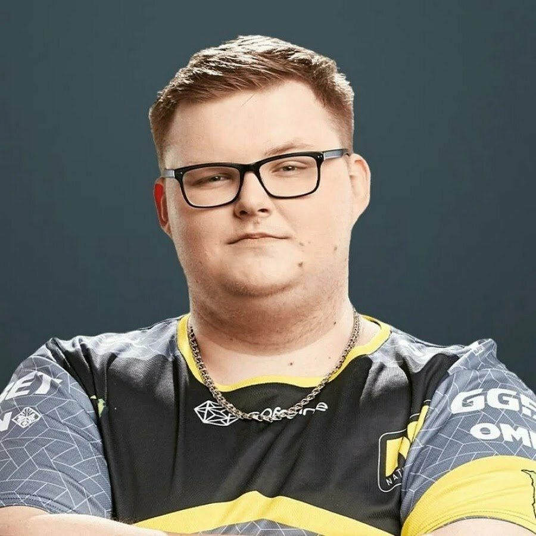
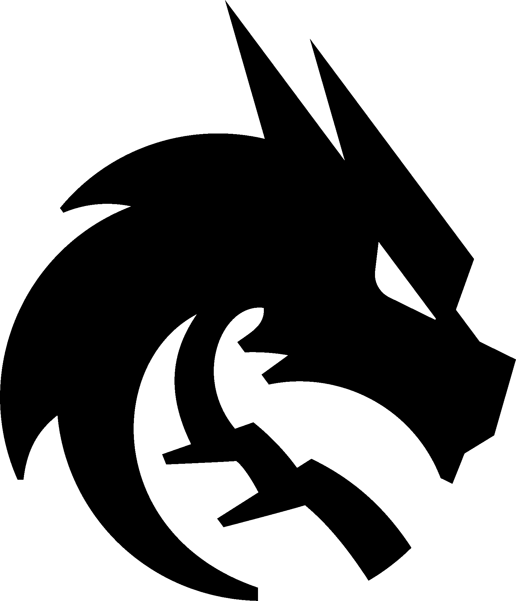

История
Первое в мире соревнование по киберспорту!
В Стэнфордском университете, студенты организовали соревнования по игре "Spacewar!" 1961 года, назвав турнир «Intergalactic Spacewar Olympics». В Spacewar! два космических корабля перестреливались ограниченным количеством ракет, как в самой примитивной форме режима «Deathmatch».
ПерейтиШутеры и стратегии!
Несмотря на неугасающую любовь игроков к консолям, 90-ые можно смело назвать десятилетием шутеров. В это время появились всем известные Doom и Quake, которые очень быстро стали хитами. Другие монстры, вроде GoldenEye 007, Unreal Tournament и Counter-Strike, не заставили себя долго ждать.
Конечно, в 90-ые нашлось место и стратегиям, вроде StarCraft: Brood War, Warcraft: Orcs & Humans, однако основную популярность эти игры получили уже в двадцать первом веке.
Открытие киберспортивных лиг!
К концу 90-х начали появляться первые киберспортивные лиги. Самая известная из них, Cyberathlete Professional League, была основана в 1997 в США. Уже через год после основания лига устроила турнир с призом в $15 000, а за десять лет существования раздала призов больше чем на три миллиона долларов.
ПерейтиКиберспорт
Популярное
Guo стал чемпионом BetBoom Classic: Hearthstone Battleground
Китайский игрок Guo победил на BetBoom Classic: Hearthstone Battleground. По итогам финала он набрал 56 очков и занял первую строчку. За победу Guo получил $10 тыс. Второе место занял BeterBabbit и заработал $4 тыс. Третье место занял игрок из Китая Vv — он получил $3 тыс. На финальном этапе также участвовали GaoShou, Matsuri, GuDDummit, Iner и Zorgo_HS.
ПерейтиSpirit сыграла лучший финал года. Larl – наконец-то MVP
Team Spirit – чемпион PGL Wallachia! Парни наконец-то выбираются из череды провалов и входят в чемпионскую форму. Larl выдал роскошный турнир! Он, несомненно, лучший игрок Валахии. Еще с начала турнира было ясно, что Spirit займет высокое место. По сравнению со всем ужасом, что мы видели в последние полгода, в Румынию приехала совершенно другая команда.
ПерейтиMOUZ обыграла Team Spirit и стала чемпионом BetBoom Dacha CS2 Belgrade 2024
MOUZ победила на BetBoom Dacha CS2 Belgrade 2024. В финале команда Камиля siuhy Шкарадека обыграла Team Spirit со счетом 3:0 — 13:11 на Vertigo, 13:9 на Ancient и 13:4 на Mirage. За первое место MOUZ получила $300 тыс.
ПерейтиИнтересные факты
Первый официальный турнир в сфере Киберспорта в России. Был он по игре из серии Warcraft.
Россия стала первой страной в мире, которая признала киберспорт официальным видом спорта.
Образование Национальной Профессиональной Киберспортивной Лиги. НПКЛ внесла большой вклад в развитие киберспорта в России.
Образование команды Virtus.pro. Первый в России профессиональный клуб.
Первый Кубок России от Федерации компьютерного спорта России.
Повторное признание киберспорта официальным видом спорта в России.
Известные люди и команды
Роман "Ramzes666" Кушнарёв — российский профессиональный киберспортсмен в дисциплине Dota 2. В 2019 году стал самым влиятельным киберспортсменом на постсоветском пространстве по версии журнала Forbes. Является игроком коллектива L1ga Team.
Выиграл множество тир 1 турниров по Доте.
Кирилл "Boombl4" Миха́йлов — российский киберспортсмен в дисциплине CS:GO. Играл в команде NaVI, с которой выиграл чемпионат мира PGL Majot Stockholm. Покинул команду 28 мая 2022 года по решению руководства клуба. 15 февраля 2023 года присоединился к составу команды 1WIN. С 2 ноября 2023 года вступает за команду Cloud9.
Антон "DyrachYo" Шкредов - Российский киберспортсмен. Проделал путь от никому не известного любителя до одного из сильнейших профессиональных игроков в Dota 2, выступающего за чемпионскую команду Gaimin Gladiators. В 2023 году журнал Forbes включил киберспортсмена в рейтинг «30 до 30».
Выиграл почти все значимые события 2023 года.
Team Spirit
Team Spirit — российская мультигейминговая киберспортивная организация, имеющая составы по Dota 2, Counter-Strike 2 и Hearthstone.
Достижения:
The International 10 (Dota 2)
The International 12 (Dota 2)
BetBoom Dacha 2023 (CS 2)
Flow FiReLEAGUE 2022 (CS 2)
3—4 место на Hearthstone World Championship 2020 (Hearthstone)
Virtus.pro

Virtus.pro — киберспортивный клуб, основанный в 2003 году в России. Клуб является семикратным чемпионом международных турниров категории Major в Dota 2 и CS:GO, входит в топ-10 мира по выигранным призовым (более 18 млн долларов). Клуб представлен в пяти игровых дисциплинах: Dota 2, Counter-Strike 2, Rainbow Six Siege, PUBG Mobile и Warface. Выиграли 15 tier 1 турниров в различных дисциплинах